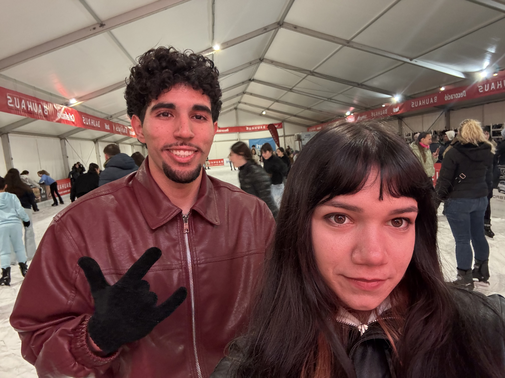

Estaba súper nervioso aquel día. Pero en cuanto empezamos a hablar, la pieza que faltaba hizo clic. Supe que no quería estar en otro sitio.

Las mejores cosas llevan su tiempo. Y nosotros hemos encontrado nuestra propia forma de hacer que todo fluya. Me fascina cómo encajamos.
Admiro muchísimo tu talento, tu curiosidad y tu perfeccionismo. Eres una diseñadora increíble y una persona aún mejor.


Maialen,
Un mes. Solo ha pasado un mes desde que me dijiste que sí… y siento que llevo toda la vida a tu lado.
No pensé que se pudiera querer tanto a alguien , pero contigo todo es diferente. Desde que eres mi novia oficialmente, cada día despierto con una sensación que no había sentido nunca: paz, ilusión y unas ganas enormes de hacerte feliz.
Me enamora despertarme y saber que eres mía. Me enamora poder decir "mi novia" y que seas tú. Me enamora cómo nos reímos por cualquier tontería, cómo nos miramos cuando nadie nos ve, cómo encajamos tan bien aunque seamos tan distintos.
Eres mi primera novia, mi primer amor real, la primera persona que me ha hecho sentir que el amor puede ser bonito, tranquilo y a la vez tan intenso.
Contigo he descubierto que querer a alguien no es solo mariposas en el estómago, es también querer cuidarla, protegerla, hacerla sonreír y estar ahí aunque el día sea gris.
Gracias por elegirme. Gracias por tener paciencia conmigo, por entenderme incluso cuando yo no me entiendo, por hacerme reír cuando todo parece pesado y por iluminar mis días de una forma que solo tú sabes hacerlo.
Este primer mes ha sido uno de los más bonitos de mi vida. Y tengo la sensación de que solo es el principio de algo mucho más grande.
Quiero seguir construyendo esto contigo, día a día. Quiero seguir descubriéndote, queriéndote mejor y demostrándote cada día que elegiste bien.
Te amo, Maialen.
Te amo con todo mi corazón, con todo lo que soy y con todo lo que quiero llegar a ser por ti.
Feliz primer mes, mi amor. Gracias por ser mi novia.